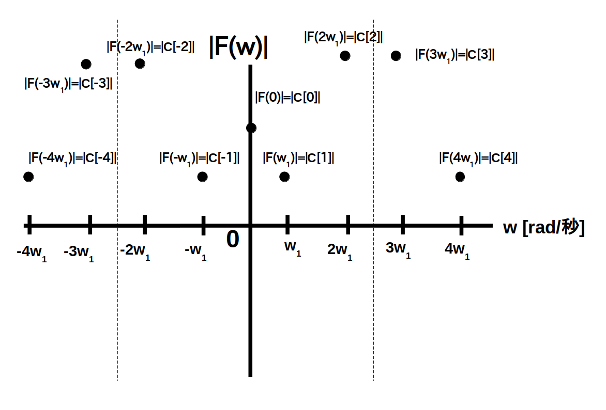
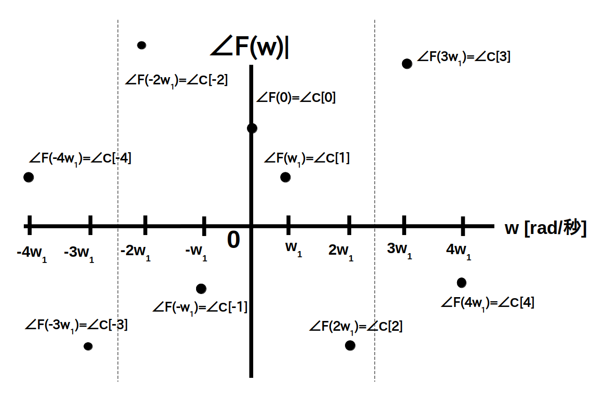

ここでは前ページで定義した周期性時間領域ディジタル信号のスペクトルをグラフ化して、視覚的にスペクトルを理解してみたいと思います。
なお今回は $\textrm{N}=5$ としています。
またグラフの横軸を角周波数 $w$ [rad/秒] としてますが、$f=w/2\pi$ と置いて、横軸を周波数 $f$ [Hz] にすることも可能です。
まず始めに周期性時間領域ディジタル信号の振幅スペクトル $|\textrm{F}(w)|$ の例を図 1 に示します。
前ページで説明したように $|\textrm{F}(w)|$ が $w = k\cdot w_1$ [rad/秒] の所にだけ値がある周波数領域ディジタル信号になっていることが分かります。
さらに、周期 $\textrm{N}$ で周期的になり、かつ $\textrm{N}/2\cdot w_1$ [rad/秒]を中心として左右対称になります。

次に周期性時間領域ディジタル信号の位相スペクトル $\angle\textrm{F}(w)$ の例を図2に示します。
やはり$\angle\textrm{F}(w)$ も $w = k\cdot w_1$ [rad/秒] の所にだけ値がある周波数領域ディジタル信号になっていることが分かります。
さらに、周期 $\textrm{N}$ で周期的になり、かつ $\textrm{N}/2\cdot w_1$ [rad/秒]を中心として点対称になります。
